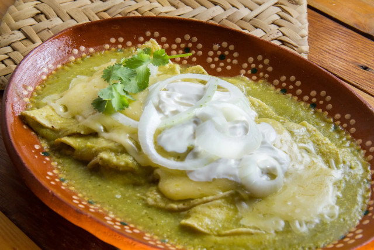

Página de inicio
Enchiladas Verdes

Platillo elaborado con tortillas de maíz rellenas con pollo, bañadas con salsa verde y gratinadas con queso manchego. La salsa verde se prepara con algo de ajonjolí y crema; tradicionalmente se sirven tres con abundante salsa en un plato metálico o cualquier plato hondo para gratinar. El adjetivo suizas se les aplica porque el platillo contiene crema y mucho queso, y Suiza es famosa por sus quesos y productos lácteos. Estas enchiladas fueron inventadas a principios del siglo XX en la famosa cadena de cafeterías Sanborns, cuya primera tienda todavía está en la calle de Madero número 4, en el Centro Histórico del Distrito Federal, en el famoso edificio conocido por los capitalinos como “el Sanborns de los Azulejos” o “la Casa de los Azulejos”.
Ingredientes:
- 500 gramos de tomates verdes cocidos
- 1/4 de cebolla
- 4 chiles serranos
- 2 dientes de ajo
- 1 1/2 tazas de crema
- Consomé de pollo al gusto
- 1 pizca de pimienta negra molida
- Comino al gusto
- Cilantro fresco al gusto
- 2 1/2 tazas de agua
- 18 tortillas de maíz pasadas en aceite caliente
- 1 pechuga de pollo cocida y deshebrada
- 1/2 cebolla picada o fileteada
- 100 gramos de queso panela rallado
Preparación:
-
Licúa los tomates con ¼ de pieza de cebolla, el chile serrano, el ajo, el consomé de pollo, la pimienta, el comino y el cilantro.
-
Vierte lo que licuaste en una olla, agrega 2 ½ tazas de agua y calienta hasta que espese ligeramente, moviendo constantemente. Reserva.
-
Calienta el aceite y pasa las tortillas. Rellena las tortillas con el pollo, baña con la salsa verde, decora con un poco de cebolla, queso y crema.